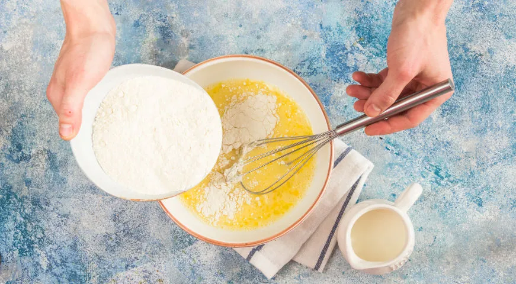
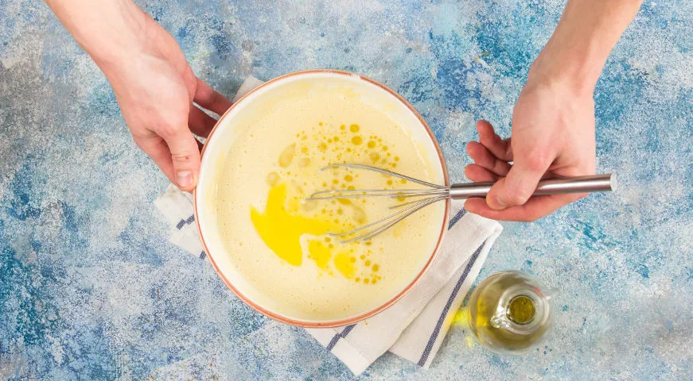
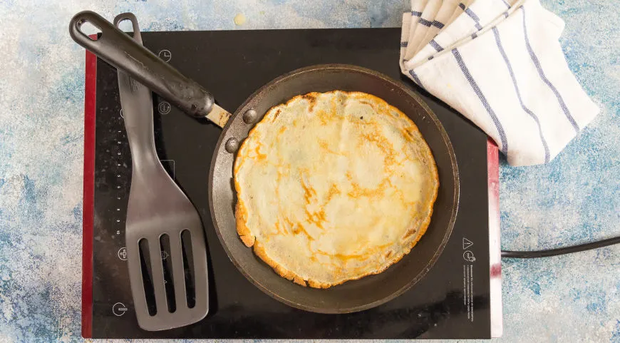

At first take a big bowl. Then mix eggs, sugar and salt using whisk.
Don't do it for too long and puting too much effort in it: main thing is to
ingridients to connect together.
In the recieved egg mixture, base of crepes pour half of cold milk. Stir with
a whisk until a homogrnrous mass is obtained. Sift the flour through a fine
sieve, but don't add it yet.

Little by little start adding sifted flour into the egg-milk mixture, stirring with
whisk or spatula until a homogeneous mass similar to sour cream is obtained. Make sure
there are no lumps.

Into the resulting dough add the remaining milk and mix thoroughly with a whisk.
Pour in vegetable oil. Mix and leave for 10-15 minutes at room temperature.

Heat a cast-iron frying pan, grease with vegetable oil and fry crepes on
both sides. Lay them out in a stack, smearing with a small piece of butter.

Finally! Now you can eat those tasty crepes!
(if you don't ate them while were cooking...)